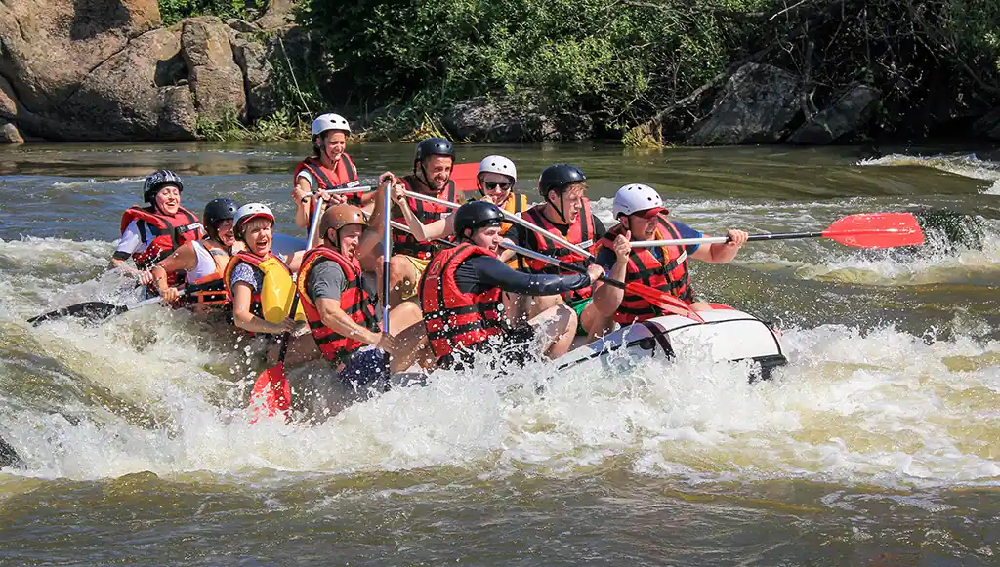
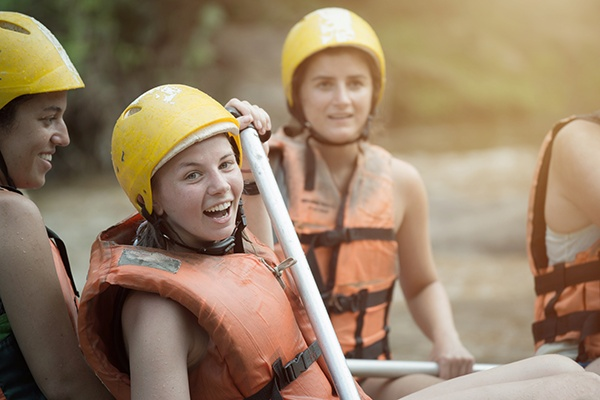

"At Radical Rafting, we believe in unleashing the thrill of adventure while honoring the breathtaking beauty of the Kicking Horse River. Our mission is to create unforgettable experiences through expert-guided white water rafting, fostering a deep respect for nature and a commitment to safety, so every guest can ride the rapids and create lasting memories." - Eric Hillman



Radical Rafting
History
Radical Rafting was established by Eric Hillman in 2015, who was inspired by the stunning Kicking Horse River in British Columbia. With a love for the outdoors and adventure, he started the company with a few rafts and a focus on exceptional customer experiences.